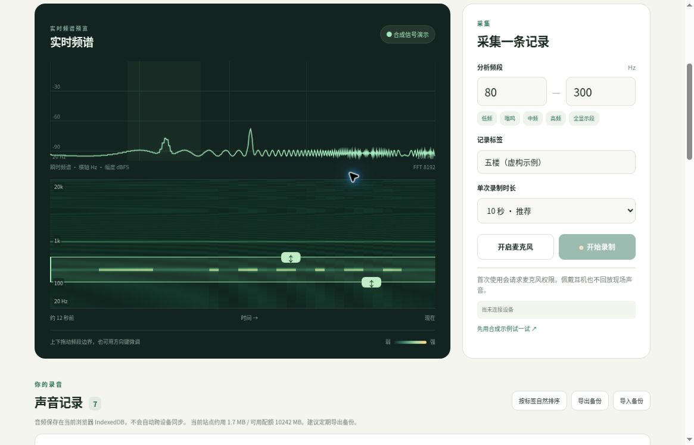
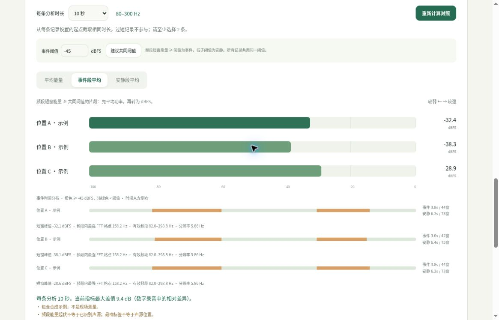

把一段声音，
放进同一把尺子。
选定频段 · 标记位置 · 等时长对照
如何使用用一个虚构的五楼蜂鸣案例，走完采集到对照
以下完全是虚构教学示例，不代表使用者的住址、楼层或真实测量。
01 · 先固定条件，再录制
假设你在五楼听到蜂鸣。选择“开启麦克风”，允许浏览器使用麦克风；标签写“五楼”，选 10 秒，保持手机朝向和高度不变，点击“开始录制”。等待自动结束后，再到其他位置用相同条件重复。
02 · 看横向时间、纵向频率
下方时频图的新声音从右侧进入，越往上频率越高。持续的窄带声通常形成横向亮线，时有时无会出现断续亮线。先观察，不要把一条亮线直接当作已找到声源。
03 · 框住感兴趣频段
上下拖动两条浅绿色边界，把亮线和两侧少量余量包进去；也可直接填写上下限。比如教学合成信号在约 160 Hz，可先选 80–300 Hz。真实蜂鸣未必在这里，应按实际图形选频。选频不会删改录音，之后可重新分析其他频段。

04 · 用相同长度比较，并拆开事件与安静
勾选至少两条足够长的记录，将“每条分析时长”统一为 10 秒；有开头碰触声时，可把各自起点调后。按楼层自然排序或上下移动，然后重新计算。先看平均能量，再用“建议共同阈值”作为起点，结合回听调阈值，分别看事件段和安静段的平均值、窗数和时长。橙色时间条代表超过阈值的短窗；没有事件时会显示“无”。

05 · 留下备份，也留下不确定性
离开前导出 .noise 备份；CSV 便于记录比较结果。某个位置数值更高，只是复测线索，墙体传声和反射也会改变强弱。这里的 dBFS 不能用于认定超标，更不能据此判断责任。
首次使用会请求麦克风权限。佩戴耳机也不回放现场声音。
实时频谱
默认静音看图；循环时图形持续滚动。回放整条录音，不改变分析起点或统计结果。
色阶固定后，颜色变化才可沿时间比较。频率轴保持不变。
颜色只增强显示，不能恢复未被录入的信号。若仍看不到目标声音，可能与麦克风、设备录音处理或信号太弱有关，可更换设备或录音设置作对照。色阶不会改变原始录音或比较统计；带外更强的声音可能显示为最亮。
指定频率，听一听
生成单一频率的正弦纯音，帮助你比较听到的声音。
默认低音量；每次最多播放 15 秒。
先调低设备/耳机音量，若有不适请立即停止。这里的 dBFS 不是实际声压级。测试音可能被麦克风收到；录制期间不能试听，开始录制会先停止纯音。离开页面也会停止。
声音记录 0
删除选择与对照选择分开；只删除确认时选中的记录。请先导出需要保留的录音。
还没有声音记录
在每个位置保持相同手机、朝向和距离，录下一段声音。
之后可拖动排序，或用上下箭头调整。
音量分析
从每条记录设置的起点截取相同时长。过短记录不参与；请至少选择 2 条。
这是一把相对的尺子。
帮助你记录、复测和比较。
不是合规声级计，也不是声源定位仪。
三个数值分别是什么？
平均能量：对选定片段做 Hann 窗短时 FFT，约 0.17 秒一窗、50% 重叠；对频段内各频率单侧功率求和，按窗能量校正，再按各窗所代表的时间加权平均功率。事件段平均、安静段平均：用所有记录共用的 dBFS 阈值，将短窗分组后各自平均功率。无符合条件的短窗时显示“无”，不会填入零或伪造静音。另行报告短窗最大值，非瞬时声压峰值。均用 10·log₁₀(均方值) 表示为 dBFS，不是 dB SPL、dBA，也不能据此判断是否超标。
“建议共同阈值”为当前所有有效片段短窗能量的第 20 百分位加 6 dB，只是起点，可手动调整；阈值变化不会改写音频。事件判定针对频段能量起伏，不等于确认某种声源，也不能保证把窄带尖峰和宽带杂声分离。各窗用相邻窗中心的中点分配时间，首尾延伸到片段边界，分组时间是估计值，不重复累计重叠窗。FFT 频率格点约 3–6 Hz，边界按格点中心纳入，显示实际有效频段。分析只使用完整窗；末尾补充一个以片段终点结束的完整窗。窄于频率分辨率的频段可能没有格点。真实音频不做降噪、归一化或后期增益。实时预览使用浏览器 AnalyserNode 的频谱输出，仅供选频；正式对照使用本项目自写 FFT 与功率算法，两者窗函数和幅度标度不完全相同，请以正式对照数值为准。
怎样让位置之间更可比？
使用同一设备、同一浏览器、同一麦克风与输入音量；固定朝向、高度、持握和与墙面距离。每处等待稳定后重复录制，记录相近时间的设备运行状态，避免说话、走动、风和碰触麦克风。网页请求关闭自动增益、降噪和回声消除，但浏览器、系统或硬件可能不支持或仍有处理。改变设备、输入增益或自动增益，会破坏横向比较。
能否从哪个标签最响，确定声音来自哪里？
不能。墙体和管道传声、反射、驻波、楼板共振与麦克风低频响应，都可能让远处更响、近处更安静。频谱相似或某处数值高，最多提供复测线索，不能据此认定来源或责任。手机对低频尤其可能不准确。涉及争议、健康或合规，需校准设备和专业测量。
音频保存在哪里？
音频、标签和测量结果由浏览器本地处理。程序没有音频上传接口，也不包含第三方统计代码；网页加载、登录验证由托管服务完成。音频存在当前网址、当前浏览器的 IndexedDB，不会自动同步到别的设备。无痕模式、清理站点数据或浏览器回收空间会导致丢失。请导出备份，并妥善保管，其中包含原始声音和标签。
内置计算自检
用已知振幅的合成正弦波检验能量估计、频段抑制和峰/静时顺序。此检查只验证数字算法，不校准麦克风。
模拟采集不使用麦克风；它把合成信号送过同一录制链路，生成明确标记为模拟的本地录音。